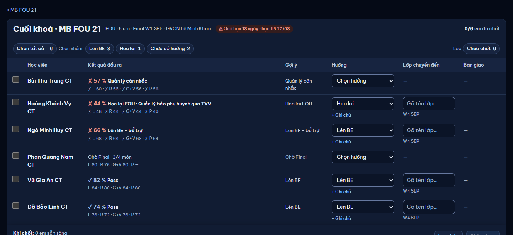
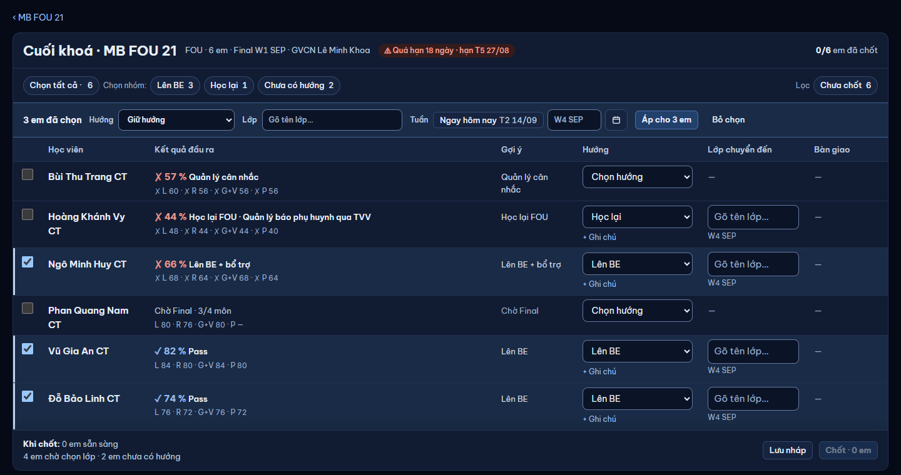

Chủ SP 11/11 mục 5: "Phần chuyển tiếp lộ trình từ lớp thường cũng thế, cần phải dễ nhìn và rõ ràng hơn, thao tác gọn lẹ hơn." Chỉ mockup. Dữ liệu seed (14/09/2026): MB FOU 21 (Final W1 SEP đã chấm, GVCN Lê Minh Khoa, QL Nguyễn Khánh Vy) · MB FOU 15 (trước Final). Luật giữ nguyên: QL chốt hướng, GVCN chỉ nhận xét (N22) · gợi ý theo dải Final 70 % (≥ 70 Pass · 60–69 lên + bổ trợ · 50–59 QL cân nhắc · < 50 học lại + Báo PH qua TVV) · lớp đích cùng chi nhánh (N17) · khác gợi ý → lý do · Kỳ vọng chỉ em Lên FT, chỉ QL · chốt được trước Final · "Ngay hôm nay" không hoàn tác → hỏi một lần.


Các bước hiện nay (QL, cả lớp):
Vì sao khó nhìn / chậm:
SỬA: (1) Nhóm theo gợi ý Final: nhóm ≥ 2 em có dải (như Công việc) với ô Lớp + Tuần cho cả nhóm; nhóm chỉ 1 em ("Học lại FOU", "QL cân nhắc", "Chờ Final") thành nhãn nhỏ dưới tên, đứng sau đường kẻ đậm — bảng không dài gấp đôi. Luật dải (≥ 60 %, 50–59 %…) ở ⓘ / rê nhãn. Bỏ cột Gợi ý và hàng chip "Chọn nhóm". (2) Mỗi dòng: hộp điểm riêng (nền nhạt + viền mảnh): % tổng to + ✓/✗, dưới là 4 ô môn L · R · G+V · P thẳng cột giữa mọi em (môn + ✓/✗ + số câu đúng / tổng câu — chủ SP 11/11; chưa có điểm giữ ô "—") → Bước tiếp = 4 chip, gợi ý sáng sẵn → Lớp mới. 4 cột rộng cố định: nút bước tiếp luôn cùng chỗ. "GVCN: …", "+ bổ trợ…", "+ Ghi chú" gom thành một dải chữ nhỏ dưới hàng, chạy hết bề ngang — mọi hàng cao bằng nhau; nhãn dưới tên một dòng: em theo lớp của dải không lặp ô lớp (rê dòng hiện "Đổi lớp"); ô lớp chỉ có ở em khác lớp nhóm / em không thuộc dải. (3) GIỮ "Chọn tất cả · n" ở hàng công cụ (ngoài tiêu đề bảng — G9). Tuần mặc định = tuần sau Final; "Ngay hôm nay" chỉ trong danh sách tuần. Còn thiếu gì: ô vàng ở dải / dòng + chân đếm một lần.
(3) Luật dải (≥ 60 %, 50–59 %…) vào ⓘ của dải. Dải nhóm có sẵn ô Lớp + Tuần cho cả nhóm (chỉ lớp cùng chi nhánh, đúng chương trình; "+ Mở lớp mới…" giữ ở cuối danh sách). Tuần mặc định = tuần sau Final; "Ngay hôm nay" chỉ trong danh sách tuần.Làm điều hiển nhiên: chọn MB BE 05 ở dải "Lên BE" → các em trong nhóm đang chọn "Lên BE" nhận lớp đó (dòng không hiện ô lớp lặp). Em ngoài dải bấm chip "Lên BE" (vd Bùi Thu Trang) → ô lớp của em điền sẵn MB BE 05 ngay cạnh chip vừa bấm (thấy ngay, sửa được). Lên FT cùng hướng "lên" với gợi ý → không cần lý do (khacGoiY). Dòng chỉ mở thêm phía dưới khi cần: + Ghi chú (Vũ Gia An), Lên FT (Target + Kỳ vọng), Tạm dừng/ Kết thúc học (Có thể quay lại · tuần xem lại · lý do), khác gợi ý (lý do). Chân: một câu "Khi chốt" + một dòng tác động. Cả lớp = 11 bấm (trước ≈ 22).
GIỮ như web: chốt theo lô, em lỗi giữ dữ liệu; lý do lỗi đặt ngay ô lớp (viền đỏ); dải kết quả có "Thử lại 1 em" luôn bật (lỗi mạng tạm thời thử lại được ngay); lọc "Lỗi 1" hiện khi có lỗi. Dòng đã chốt: chữ đậm + biểu tượng khoá + "Sửa" (QL) mở lại chip tại dòng, trong đó có "Huỷ quyết định". Cột Bàn giao chỉ có sau khi chốt: viên trạng thái + hạn, bấm mở panel Bàn giao như cũ.
GIỮ: chốt trước Final được; Bổ trợ Final và Xét lại lộ trình tự sinh khi có Final. Chọn em (ô tick đầu dải = cả nhóm, hoặc từng em) → thanh áp: Bước tiếp (chip) · Lớp · Tuần — bấm là áp ngay cho các em đã chọn (cùng mẫu màn 2, bỏ nút "Áp cho n em") — dùng khi muốn đặt cùng bước tiếp cho nhiều em khác nhóm. Chưa có Final thì hộp điểm ghi "Chờ Final" + ✓/✗ từng môn theo Progress.
GIỮ luật N22: GVCN xem cùng nhóm theo gợi ý như QL (biết gợi ý cả khi QL chưa chốt), không chọn bước tiếp; cột Bước tiếp chỉ chữ (đã chốt / "QL chưa chốt"); ô Nhận xét mỗi em (không bắt buộc) → "Lưu nhận xét · n em". TVV / CX / Admin: như GVCN nhưng không ô nhận xét.
| Thao tác | Trước | Sau | Kết luận |
|---|---|---|---|
| Xem kết quả Final + gợi ý | 2 cột (Kết quả đầu ra · Gợi ý) | 1 cột Kết quả + nhóm theo gợi ý | GIỮ · gộp |
| Chọn hướng một em | ô thả Hướng (2 bấm) | chip Bước tiếp (1 bấm), gợi ý sáng sẵn | GIỮ · nhanh hơn |
| Chọn lớp cho cả nhóm | chip "Chọn nhóm" → thanh Áp (Lớp) → Áp → Bỏ chọn | ô Lớp ngay trên dải nhóm (2 bấm); dòng theo nhóm không lặp ô lớp | GIỮ · bỏ 3 bước |
| Chọn tất cả · n | chip "Chọn tất cả · n" | ô "Chọn tất cả · n" hàng công cụ (K1–K4); ô tick đầu dải = cả nhóm | GIỮ |
| Chọn nhiều em bất kỳ + áp chung | ô tick + thanh Áp (Hướng · Lớp · Tuần · Kỳ vọng FT) | như cũ, Hướng thành chip (K4) | GIỮ |
| Lớp riêng một em · + Mở lớp mới… | ô gõ tìm trên dòng | ô lớp trên dòng (em ngoài dải / khác lớp nhóm) hoặc "Đổi lớp" khi rê dòng theo nhóm; "+ Mở lớp mới…" cuối danh sách | GIỮ |
| Tuần bắt đầu · Ngay hôm nay | thanh Áp: nút "Ngay hôm nay" + ô tuần | ô Tuần trên dải nhóm / thanh áp; "Ngay hôm nay" là mục đầu danh sách tuần; vẫn hỏi một lần khi chốt | GIỮ · bớt bấm nhầm |
| + Ghi chú cho GV lớp mới (không bắt buộc) | link "+ Ghi chú" dưới ô Hướng | link "+ Ghi chú" dưới chip → ô mở dưới hàng (K2 Vũ Gia An) | GIỮ |
| Lý do khi khác gợi ý / dừng học | ô dưới ô Hướng | mở dưới hàng khi cần | GIỮ |
| Có thể quay lại học · tuần xem lại | ô tick + ô tuần trong ô Hướng | mở dưới hàng | GIỮ |
| Target · Kỳ vọng FT (Đạt / Không đạt · nguyên nhân · kỹ năng · phương án) | khối trong ô Hướng | mở dưới hàng khi chọn Lên FT | GIỮ |
| Lọc Chưa chốt · Lỗi · Xét lại · Còn bàn giao | hàng chip phải | một nhóm nút "Lọc" (chỉ hiện mục có em) | GIỮ |
| Lưu nháp · Chốt · n em · Thử lại n em | chân + nút "Thử lại n em" ở dải kết quả | như cũ — "Thử lại n em" luôn bật (K3) | GIỮ |
| Áp cho n em (thanh áp) | chọn ô rồi bấm "Áp cho n em" | chọn chip / lớp / tuần là áp ngay | GIỮ · bỏ 1 bước |
| Reset bậc vi phạm (N36) | ô tick ở chân khi có em có bậc | như cũ | GIỮ |
| Sửa · Huỷ quyết định · Bàn giao · Xét lại | trên dòng đã chốt | như cũ (K3) | GIỮ |
| GVCN nhận xét | cột Nhận xét + "Lưu nhận xét" | như cũ (K5) | GIỮ |
| QL đọc nhận xét GVCN khi chốt | dòng "GVCN: …" dưới cột Gợi ý | dòng "GVCN: …" dưới Kết quả (K1–K3; đủ chữ ở title) | GIỮ |
| Từng em (từ hồ sơ HV) | sang trang lớp, em chọn sẵn, cuộn tới | như cũ, dòng em nền nhấn + vạch trái (K6b) | GIỮ |
| Cột "Gợi ý", hàng chip "Chọn nhóm", cột Bàn giao trước khi chốt, ô lớp lặp ở mọi dòng | có | bỏ — gộp vào nhóm / dải; nhóm 1 em thành nhãn dưới tên; Bàn giao chỉ sau chốt | BỎ (lặp) |
Dòng đọc Turso: không đổi — một GET /classes/:id/transition khi mở; chọn lớp / nhóm làm trên dữ liệu đã nạp; chốt vẫn POST /classes/:id/transition theo lô. Ô môn ghi đúng / tổng câu, tổng giữ % (chủ SP 11/11): GET /classes/:id/transition trả thêm số câu đúng + tổng câu từng môn (điểm lớp thường đã lưu sẵn đúng / tổng — cùng câu SQL, thêm cột, 0 request thêm).
| Ý (lời giao) | Chỗ trong mockup | Đạt? |
|---|---|---|
| Bấm thử luồng hiện tại, liệt kê bước | mục 0 (7 bước + 5 lý do) | Đạt |
| Bỏ / gộp bước thừa | gộp Gợi ý vào nhóm; dải nhóm thay "Chọn nhóm → Áp → Bỏ chọn"; tuần theo nhóm | Đạt |
| Mỗi em một dòng: kết quả → bước tiếp đề xuất → lớp / lộ trình mới | K1–K3 cột Kết quả · Bước tiếp · Lớp mới | Đạt |
| Thao tác cả lớp nhanh | K2: 11 bấm cho 6 em (trước ≈ 22) | Đạt |
| Sửa từng em tại chỗ | chip + ô lớp / "Đổi lớp" trên dòng; mở dưới hàng khi cần (K2); từ hồ sơ HV (K6b) | Đạt |
| Không đổi luật (plan.md 1.6, thi thật là kết thúc, quy chế lớp thường) | dải Final 70 %, QL chốt, GVCN nhận xét, Kỳ vọng chỉ Lên FT, bổ trợ / Báo PH theo dải — y như mã hiện tại | Đạt |
| Critique vòng 1 P0 "K2: Đỗ Bảo Linh Lên FT khác gợi ý mà không lý do" — BÁO NHẦM | Theo mã khacGoiY (shared/domain/chuyenLop, truy vết v6 mục 3): gợi ý "lên" khớp CẢ Lên BE và Lên FT → không bắt lý do. Chip Lên BE viền đứt chỉ là gợi ý lớp kế. Chỉ "Học lại" ↔ "lên", hoặc dừng học, mới cần lý do. | Giữ |
| [XM] nhóm theo gợi ý hay theo bước đang chọn | theo gợi ý (cố định, dòng không nhảy khi bấm chip); ô Lớp nhóm áp cho mọi em đang chọn đúng bước đó | Đề xuất — chủ SP xem K2 |